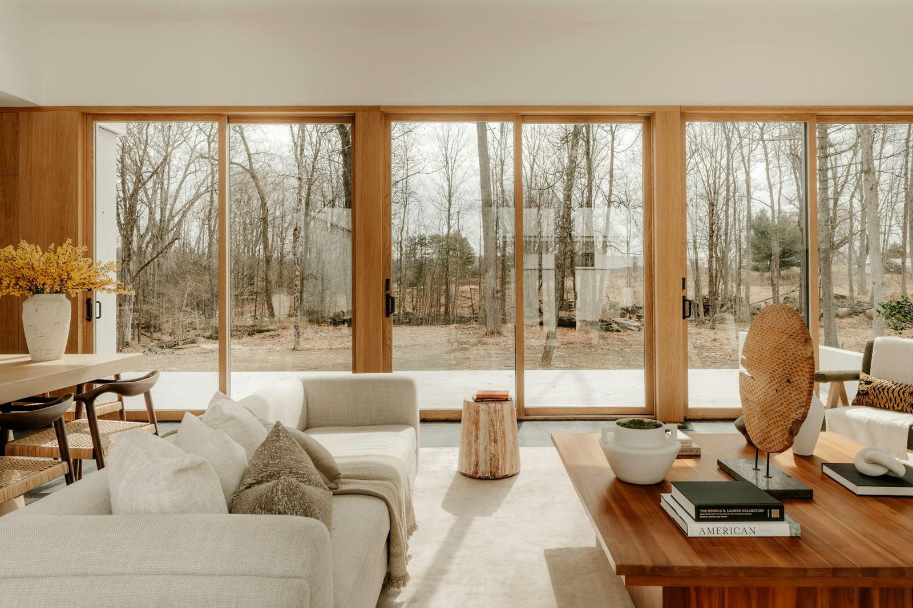
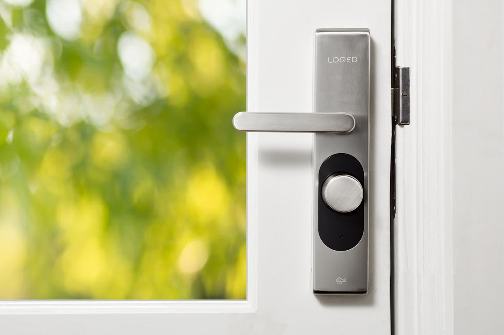
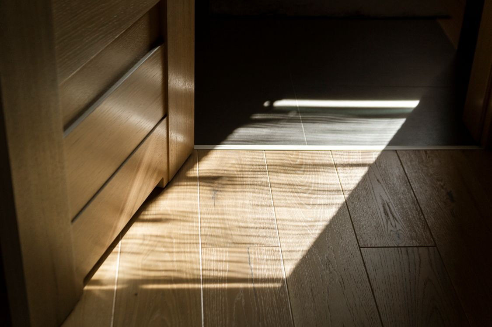

Galerie
Ideen für Ihr Zuhause.
Fenster, Räume und Materialien als Inspiration für Ihr nächstes Vorhaben.
Beispielfotos zur Inspiration. Die Bilder zeigen keine nachgewiesenen Arbeiten von Senad. Eigene Projektfotos können später ergänzt werden.

Licht und großzügige Fensterflächen
Foto: Clay Banks / Unsplash
Details rund um Fenster und Türen
Foto: Joppe Beurskens / Pexels